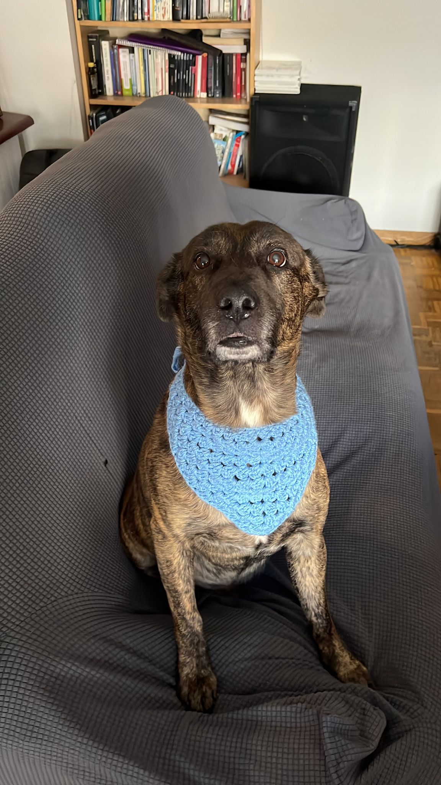
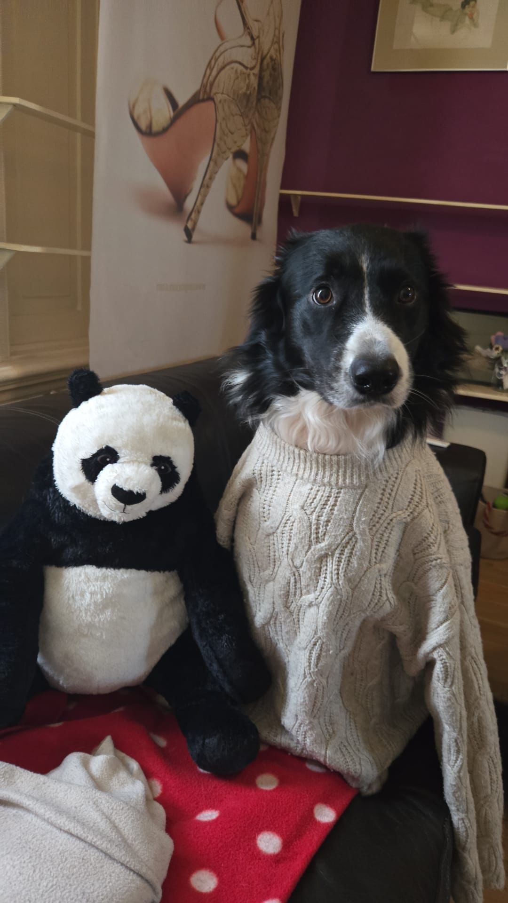

Photoshot Esquitx
Click here to view Esquitx pictures
Things Esquitx love:
- The beach
- Food, especially meat
- Run and walk in a sunny day
- Caresses between back and butt
Things Esquitx hate:
- Shower, he hates with all his heart take a shower
- The vacuum
- His own dog food—he's a picky eater
Photoshot Stormy
Click here to view Stormy pictures
Things Stormy love:
- Pandas, is his favorite toy (like you can see in the picture).
- Cheese, he is a cheese lover.
- He loves playing with the leaves in windy weather, catching them as they fly.
Things Stormy hate:
- Showers, he just stands there like a statue with his gaze lost.
- Other dogs—not all of them, but let's say he didn't have good experiences with dogs of his own kind when he was growing up.
Is Esquitx your top pick? Or maybe Stormy takes the crown?
Want to learn more about these adorable little troublemakers?
Subscribe to our newsletter and stay updated every week on the adventures of Esquitx & Stormy!